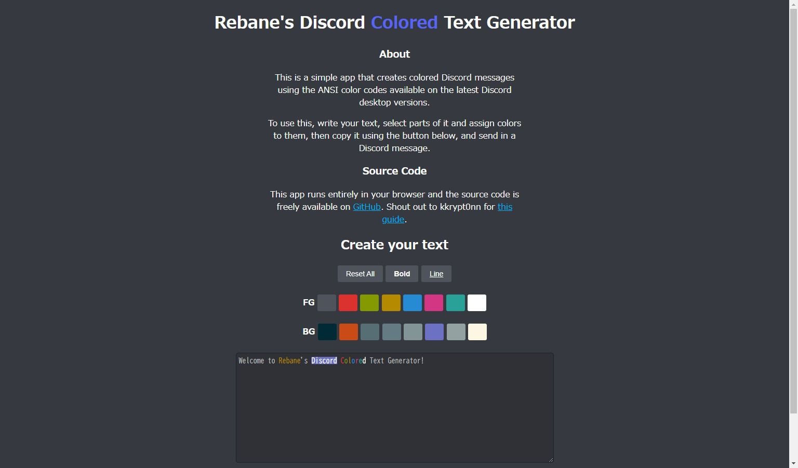

<!DOCTYPE html>
<html lang="ja">
<head>
    <meta charset="UTF-8">
    <meta name="viewport" content="width=device-width, initial-scale=1.0">
    <link href="https://kama5.f5.si/style/global.css" rel="stylesheet">
    <link rel="icon" type="image/ico" href="https://kama5.f5.si/image/favicon.ico">
    <title>オヌヌメ○○系 #7</title>
    <link rel="preconnect" href="https://fonts.googleapis.com">
    <link rel="preconnect" href="https://fonts.gstatic.com" crossorigin>
    <link href="https://fonts.googleapis.com/css2?family=Kiwi+Maru&display=swap" rel="stylesheet">
</head>
<body>
    <!--ここから-->
    <a href="https://kama5.f5.si/index.html">
        <table class="title">
        </table>
    </a>
    <hr>
    <!--ここまでは何もしない-->
    <h2>オヌヌメ○○系 #7</h2>
    <h3><a href="https://rebane2001.com/discord-colored-text-generator/">rebane2001.com/discord-colored-text-generator</a></h3>
    discordで色付きの文字を作れるようになるサイト<br>
    できる色は限られるものの背景色まで指定できるのがすごいところ<br>
    スマホアプリ版(ブラウザは多分表示される)は色がつかない<br>
    ansiというやつを使ってるんだとか<br>
    ↓このサイトで作った色付きの星<br>
<textarea rows="5" cols="30">
```ansi
★★★

```
</textarea><br>
    
    <hr>
    <iframe src="https://kama5.f5.si/sitarahen.html" frameborder="0" class="sita"></iframe>
</body>
</html>
